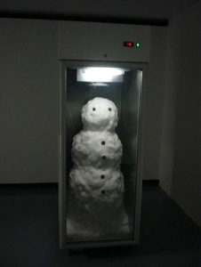

Copyright by Studio Warszawa Centralna 2006-2010
Materiały wizuane u góry: (od lewej: Oskar Dawicki, praca w Muzeum Sztuki Nowoczesnej w Warszawie, Marcel Duchamp (szkic do Wielkiej Szyby, fragment), oraz jedna strona z Wielkiej Encyklopedii Larousse’a.
tekst: Jan Przyluski


![Film i paradoksy - Jan Przyłuski w The KNOT (Bukareszt)
PARADOKSY
(English translation comming up)
Czym jest paradoks? Sztuka jest światem w którym nie można pominąć tej kwestii. Paradoks w sztuce to sposób na spojrzenie niedualne, poza dychotomią tragizm-absurd, które są związane z wartosciowaniem. Paradoks, przeciwnie, niewartościuje, jest zaangażowany, prowokuje i wynosi poza obszary objęte kryzysem. Elementy taoistyczne w sztuce zachodniej (tak zwanej “zachodniej“), oraz Platon i Czuang Tsy – różnice te ujawniają wielorakość istnienia paradoksu. „Tragizm – absurd – paradoks“ – tak zatytułowany esej Hilsbechera cytowałem już przy okazji sztuki akcji, jednak temat okazuje się nośny w całym jej obszarze. Odcienie jakie wnosi możliwość przemiany form myślenia za pośrednictwem znanych ale zapomnianych środków zbliżyć nas może do kultur, które nie zanegowały nigdy paradoksalnej natury rzeczywistości i na tym rozumieniu zbudowały swoją potęgę. Sztuka taoistyczna, czy wogóle sztuka chińska jest tego doskonałym przykładem. Klasyczna chińska formuła kreacji i jej elementy w sztukach innych kultur (paradoksy buddyzmu, od Nagardzuny po koany i catuṣkoṭi) przekonuje o tym dobitnie. Podobnie Zachodni hermetyzm. Jak I Ching wpłynął na rozwój myślenia paradoksalnego? Tego rodzaju pytania będziemy zadawać za kilkanaście lat, teraz zato przypatrzmy się w jakim miejscu sami się znaleźliśmy.
Malarstwo gestu, manifestacja energii życiowej jest przecież stale obecny w euroamerykańskiej historii sztuki. Film rozumiany jako ruch/obraz, albo flux/flow. To paralele do przepływu energii chi, choć jeszcze nie nauczyliśmy się tak tego postrzegać. Tai chi – ruch i medytacja – stał się jedną z tak popularnych praktyk, że są już widoczne mentalne konsekwencje tego wpływu kulturowego. Drugim będzie z pewnością myślenie paradoksalne, bo choć rewolucja kwantowa objęła wszystkie nauki ścisłe, nadal nie wpłynęła prawdziwie na zachodnią humanistykę i to jest skandal.
Tragizm – absurd – paradoks. Walter Hilsbecher określił tę triadę i pokazał jej chronologiczne następowanie w przemiania form literackich. Tragiczna jest tragedia, absurdalny jest Beckett i jego następcy, ale już Joyce czy Borges są paradoksalni. Zainteresowaniem Hilsbechera stały się odcienie, stopnie intensywności, różne zabarwienia, od tragizmu do paradoksu. I dalej: do śmiechu, rozładowania napięcia tkwiącego w sprzeczności, do aporii, na której buduje się treść każdego przekazu. W teatrze na przykład rządzi dramatyzacja, czyli rozsunięcie tych biegunowych punktów, zmaksymalizowanie napięć, które pozwala poruszyć widza. Z drugiej strony teatr jest jakąś wielką zgodą na czas, na przemijalność czasu, na efemeryczność. I tak jest praktycznie we wszystkich sztukach performatywnych. To, co możemy nazwać strukturą obecną w teatrze to nic innego jak tylko powtórzenie. Próba po próbie, spektakl po spektaklu. Każdy inny. Różnica czyni treść. Reszta jest ulotna, często jednorazowa, i należy zgodzić się na jej niepowtarzalność. Inne sztuki łudzą jakby tym, że „mają“ mocny przedmiot, strukturę materialną, która posiada swoje trwałość. Obraz czy rzeźba udaje, że przetrwa dużo dłużej, będąc artefaktem. Wrócę do tego jeszcze przy następnej okazji.
Paradoks obecny jest we wszystkich kulturach świata – to hipoteza, której jestem w stanie bronić. Na pewno zaś w kulturach o charakterze współczesnym, posiadających rozwiniętą refleksję logiczną, czyli refleksję meta, abstrakcyjną [i nie zaaangażowaną w tworzenie treści kulturowych pierwszego stopnia, takich jak normy społeczne]. Podobnie formułował to Timothy Leary, kiedy pisał:
“Wierzę, że nowa filozofia (...) powinna się składać z następujących elementów:
1.Być naukową w treści i fantastyczno-naukową w formie;
2.Opierać się na poszerzeniu świadomości, zrozumieniu swojego systemu nerwowego, co pozwoli osiągnąć intelektualną skuteczność i emocjonalną równowagę;
3.W polityce kłaść nacisk na indywidualizm, decentralizację władzy, tolerancję różnic zgodnie z zasadą "żyj i daj żyć innym", działanie lokalne i "myślenie o swoim interesie";
4.Kontynuować trend ku otwartej seksualnej ekspresji, przy realistycznym dostrzeganiu równouprawnienia i zróżnicowania płci. Religijnym symbolem mitycznym nie będzie mężczyzna na krzyżu, lecz para męsko-damska złączona w komunii wyższej miłości;
5.Poszukiwać objawienia i Wyższej Inteligencji nie w formalnych rytuałach adresowanych do antropomorficznego bóstwa, lecz w procesach naturalnych, systemie nerwowym, kodzie genetycznym, nie omieszkując prób komunikacji kosmicznej;
6.Zawierać praktyczne, techniczne procedury neurologiczno-psychologiczne dla zrozumienia i posługiwania się wiadomościami o nieśmiertelnej harmonii ukrytymi w procesie umierania;
7.Być nacechowana hedonistycznymi, estetycznymi, nieustraszonymi, optymistycznymi i miłosnymi uczuciami. “](paradoks_files/shapeimage_2.png)